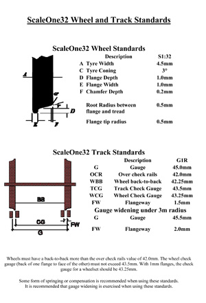
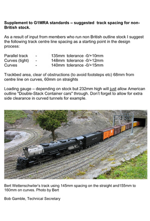

.svg "Select English site")
.svg "Select German site")
.svg "Select French site")
Track and wheel standards
Please click on the images to download a full sized PDF version.
Traditional G1MRA standards
The ScaleOne32 finescale standard

Track spacing for non-UK loading gauges

Please click on the images to download a full sized PDF version.

